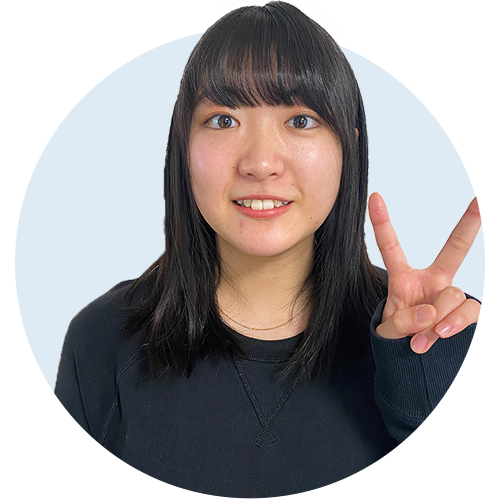

チームで決めた課題解決のテーマについて
今回チームで決めた内定者チーム課題について、どんなテーマにしたのか教えて！
きらきら星は、現在キャリア教育に関するアプリを作成しようと考えています。
キャリア教育の課題として、将来に対して意識をしていない状態での職業体験を行うこと、進路選択をしてしまうことが挙げられると思います。
そこで今回考えたアプリを活用し、中学生からキャリアに関して意識することで、より自分に合ったキャリアを進められるよう、現在の日本のキャリア教育の課題を解決したいと考えています。
4つの機能があります。
・夢しるべ(仮)
これは、各業界の社会人にインタビューを行い、中学生が閲覧できるものになります。いわば中学生のキャリア教育においての参考書みたいなもので、中学生は手軽に情報収集を行うことが可能になります。
・自分の考えをデータ化し、クラウドに残す機能
昔の考え方などをクラウドに残していくものです。 過去に考えていたことを振り返ることで自分自身を見つめ直し、将来のビジョンを考える上での1つの材料にして欲しいと考えています。
・モチベーショングラフ機能
中学3年間の日々を記録していくことで、より正確なモチベーショングラフを作成することができます。 自分がどんな時にモチベーションが上がり、下がったのか、その原因なども詳細に記録することができるので、より自分のことを客観的に深く知ることができると考えています。
・適正診断機能
この機能は、上記3つを踏まえた上で、自分の適性を導き出してくれる機能です。
きらきら星は、今まで教育に関わっていたメンバーが多いのが1番の理由です。テーマについて話し合うなかで自然と教育をITで解決したいという考えにたどり着きました。また実際に就職活動を行う中で、今までのキャリア教育に疑問が生まれたという背景もあります。
メンバーの実体験から生まれたサービスなんやね。
実際にこのアプリをどのように活用していけたらいいって考えてる？

今後の教育現場ではiPadが配られる前提と仮定しています。中学生にはこのアプリをダウンロードしてもらい、キャリアに対する考え方や、意識の変化を促したいです。
今回のターゲットは中学生ですが、情報は全てクラウドに残るのでその後も活用できると考えています。 大学進学や就職活動の時期でも過去のデータを見直すことで役立てるようにしたいです。

コロナ禍の就活と就活生へのメッセージ
コロナ禍での就活は、オンラインで色んな会社を見ることができたのがメリットです。色んな会社を見ることで自分の視野を広げることが出来たので、自分の考えを広げながら進む道を決めていって欲しいと思います
リモートでの就活だからこそ、興味のない業界でも気軽に見ることが出来て興味を持つことがあるかもしれないから、色々動いてみると良いと思います。あとは内定承諾までの期間に、行きたい企業を比較してじっくり考えてください。
僕は元々就活する気がなくて、アルバイトでもいいやと思っていましたが、シアトルに一目惚れして入社することができました。納得して進むこと、諦めないことが大事だと思うので頑張ってください！
同じ条件の中でなるべく早く動いて視野を広げながら、誰に何と言われようと自分の人生なので、自分が納得出来るまで就活してください！！腹落ちできるまでしっかり自分と向き合ってほしいなと思います。
会社に合わせに行かないで就活するのがいいと思います。僕はサッカー以外にやりたいことを探すのがしんどかったのですが、自分のありのままを受け入れてくれる会社は絶対あると思うので、頑張って探していってください！
共通して教育関係を学んでいる人が多いこともあり、みんなが同じ方向に向かって頑張れてる！役割分担もしっかりできていて、良いチームです。